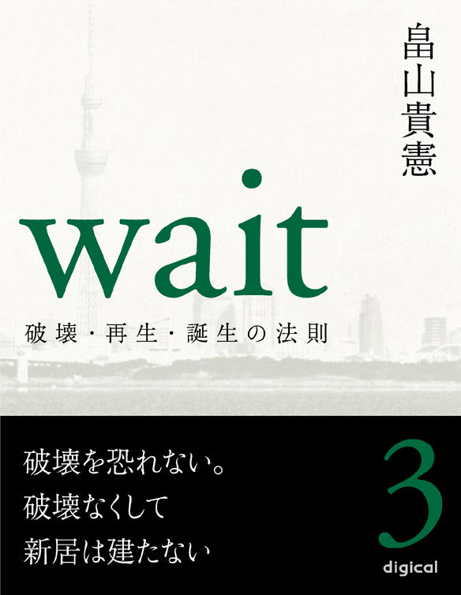
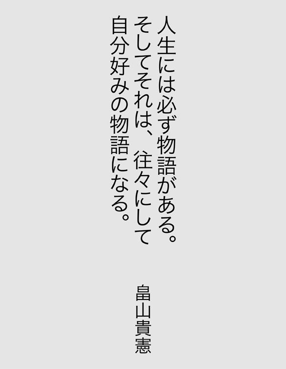

| Wait 〜破壊・再生・誕生の法則〜 第三巻 (【impress QuickBooks】) | |
| 畠山貴憲 | |
| (2012) | |


【プロフィール】
畠山 貴憲（はたけやま たかのり）
一九七〇年東京都生まれ。一九九七年劇団『ＡＴＡＣ』の座長になり、二〇〇二年劇団名を『ＴＨＥＡＴＥＲ ＪＵＮＫ』と改める。二〇〇三年『永遠の一秒』が、萬スタジオバックアップシリーズで最優秀審査員賞を受賞。翌年上演の『海を越えた挑戦者たち』はＦＭ沖縄制作のラジオドラマに選出される。その後、フリーになり、二〇〇九年小説『ｗａｉｔ』が、第十六回松本清張賞の予選を通過。四一〇編の中の三三編に選ばれる。来年、小説「（仮）バンミカセ！～海を越えた挑戦者たち～」が琉球新報社より出版予定。同作品は現在、映画化として進行中。
『事を成す人は、必ず時の来るを待つ。焦らず慌てず、静かに時の来るを待つ』
この言葉は、パナソニック（旧松下電器）の創業者、松下幸之助氏の名言です。
『何も咲かない寒い日は、下へ下へと根を伸ばせ。やがて大きな花が咲く』
これは、元女子マラソン、シドニー五輪金メダリスト、高橋尚子選手の座右の銘。
何れも、本作品中に登場する言葉です。
今からちょうど五年前、私は十年間座長を務めた劇団を断腸の思いで閉じました。そして、それからすぐに睡眠障害を患ってしまい、日に日に体力が奪われていきました。まさに負のスパイラル。加速度をつけながら、私の身体が悲鳴を上げます。
まず耳が聞こえなくなり、しばらくして、今度は高熱が一週間ほど続いたと思ったら、突然、顔の右側半分が動かなくなりました。
顔面神経麻痺──
私の細胞一つ一つが破壊されていくような気がしました。
苦
悶
、煩
悶
の日々が続きました。
もう限界でした。
そんなある日、雨に霞む海岸通りを眺めていたら、遠くにぼんやりと明かりが見えたのです。すぐにガソリンスタンドの明かりだと気付いたのですが、私はその明かりがなぜかしら『自分の進む道しるべ』のような気がしてなりませんでした。
本作品の構想が降ってきた瞬間です。
ちょうど、そんな時でした。先ほどの言葉（松下幸之助氏と高橋尚子選手の言葉）に出会ったのは。
『事を成す人は、必ず時の来るを待つ。焦らず慌てず、静かに時の来るを待つ』
『何も咲かない寒い日は、下へ下へと根を伸ばせ。やがて大きな花が咲く』
それから私は、耳が聞こえなくても顔が動かなくても出来ること......そう、本を書き始めたのです。
自分の過去を、主人公、志村洋介にトレースしました。もちろん、洋介ほど私は格好良くありませんが、この主人公は見事、私の過去を受け入れてくれました。
そして半年の時間を要し、ようやく書き上げました。私の小説処女作『ｗａｉｔ』を。
本作『ｗａｉｔ』は、あくまで自分の過去をモデルにしたフィクションですが、私はこの作品を書き上げて、一つだけ気付いたことがあります。それは、これまで私の歩んできた人生が、実は自分好みの物語だったということ。つまり、自分好みの物語のような人生を、私はこれまで歩んできたというわけです。
人生とはとかく、そういったものなのかもしれません。
読者の皆さんも、一度、この機会に自分の人生を振り返ってみて下さい。望むと望まないに関わらず、実はそれが自分好みの物語だったことに気付くかもしれませんよ。
最後に蛇足ですが、そんな私の物語は、数ヵ月後、松本清張賞の予選を通過しました。
人生には必ず物語がある。そしてそれは、往々にして自分好みの物語になる。
畠山貴憲
【登場人物】
○志村洋介 劇団『ｗａｉｔ』座長。劇作家。演出家。俳優。
○西村恭子 女優。
○高田直哉 俳優。フリーター。
○東野美穂 女優。フリーター。
○松原守 俳優。フリーター。
○鳥海研二 俳優。フリーター。
○西村翔太 恭子の弟。
○大原社長 大原プロの社長。
○勝田信夫 舞台監督。洋介の師匠的存在。
○美川俊二 俳優。フリーター。
○中込ゆり 日南放送社員。
○大沼育子 日南放送報道部副部長。
○三島友則 福岡県のとある会館の職員。
○橋本昌美 宮崎県小林市のとある会館の館長。
○仲間 聡 沖縄県在住の洋介の知人。
○新垣正弘 沖縄県那覇市議の秘書。
○高嶺 徹 琉球タイムス社文化事業局事業部部長。
○川岸正平 劇団『ｗａｉｔ』制作。
○川本新之助 宮崎県のとある会館の館長。
○長森健一 宮崎のとある劇団の座長。
○君島 恵 女優。タレント。
○安岡邦子 戦争当時、特攻隊を見送った生き証人。
○野上理恵 女優。フリーター。
○小峰修一 プロデューサー。
○真柴健吾 映画監督。
○添田 久 出版社編集員。
○山田憲明 舞台照明。
ｗａｉｔ ～破壊・再生・誕生の法則～
第三巻 破壊を恐れない。破壊なくして新居は建たない
第一巻 やらざるを得ない状況は人生のターニングポイント。能書きを言う前に行動しろ！
１ 天王洲のカフェ
一 始動
２ 止まない雨
二 代表作
３ 海岸通り
三 背徳の瞳
４ 道
四 一人旅にて
第二巻 この世は全てタイミング。勝負のシグナルを見逃すな！
５ 流れの中で
五 布
石
６ 丸い高架橋
六 宮崎と沖縄（その一）
七 宮崎と沖縄（その二）
７ 春の歌
八 結実
８
回顧
丸い高架下にある港の堤防で、洋介はこれからのことを考えるため、もう一度、これまでの事を回顧してみた。
『未来予想ズ』という劇団に入団し、その翌年から座長に就任。劇団名を『ｗａｉｔ』に変えた。ｗａｉｔとは待つこと。『歴史上、名を連ねた人物は、皆、その時が来るのを待った』という意味を込めてつけた劇団名『ｗａｉｔ』
確かにその都度、その時はやってきた。九十八年から脚本と演出をやり始めて以来、破壊と再生を繰り返しながら。
破壊の初めは、やはり直哉の一件だろう。あの一件があって一人旅に出、沢山のものと出会い、再び東京に戻ってきた。そして実績という名の武器をつくるため、精力的に次々と作品を発表していった。この再生によって、『永遠の一秒』の大賞受賞と『海を越えた挑戦者たち』のラジオドラマ化という結果が形として残った。
次の破壊は劇団の体制を四人にした時。それからｗａｉｔは、躍進を遂げたと言っても過言ではない。それは宮崎ツアーの成功を一つとっても、充分に『その時』と言えるだろう。
ここまで考えた時、洋介はふとあることに気付いた。それは筋肉の『超回復』の原則。筋繊維はトレーニングによって破壊された後、休息の間にたんぱく質などの栄養素を摂取することにより、以前よりも少しだけ強度を増す。これを『超回復』という。この超回復を繰り返すことによって、人間の体は次第に強靭な肉体へと変化していくのだ。
確かに、それだけ強靭な肉体になればおのずと破壊する行為も過酷なものになっていく。筋繊維はどんどん強度を増していっているのだから。しかしトレーニングしている時の辛さは、決してその内容には比例しない。なぜなら、その肉体に応じた破壊行為を行なっているから。要するに破壊行為とは、いつでも同じだけ辛いのだ。しかしそうやって『次の辛さ』を迎えるたび、肉体は確実に強く大きくなっている。
まさにｗａｉｔは、このプロセスを辿ってきたような気がしたのだ。破壊のたびに結果を残して少しずつ大きくなってきた。つまり逆を返せば、結果を残す前には必ず破壊があったということになる。
目の前に輝く白亜のレインボーブリッジを見上げながら、洋介がポツリと呟いた。
「十年か......」
ちょうど今年で、作・演出を手がけて十年になる。決して最初は好んで始めたものではなかったが、この仕事をやり続けていくにつれ、次第にかけがえの無いものになっていったことは事実。
遠く、お台場の夜景に目を移す。レインボーブリッジの緑色の点が、一つずつその夜景へと近付いていく。ふと、この橋は向こうへ繋がっているのだと思った。
九
夏の終わり
宮崎ツアーの夏も終わり、だいぶ日が短くなり始めた頃、洋介は福岡県北九州市のウィークリーマンションに居を構えて、連日、福岡組の稽古に励んでいた。今回は、オーディションでキャストを決めてから稽古を行なうのではなく、ワークショップを兼ねたオーディション、つまり、稽古をしながらキャストを決めるという方式をとった。出演できるか否かがかかっているということもあり、役者は皆、必死で稽古に取り組んだ。
洋介が福岡へ来て一週間が過ぎたある日、その日は稽古が休みだった。洋介は迷わず朝九時の電車に乗り、大分県中津市に向かった。そこには戦中、宇佐航空隊に所属していた特攻隊員が出撃前夜などに酒盛りをしたという料亭があると聞いて、行くなら今しかないと思い、迷わずその場所へ向かったのである。
マンションの最寄り駅、八幡駅からまず西小倉駅へ向かい、西小倉駅で今度はＪＲ日豊本線に乗り換えて一路、中津駅へと向かう。こういう時は、土地勘のない方が思い切った行動を取れるというもの。およそ一時間半の電車の旅である。
中津駅に到着すると、洋介は観光案内所へ行って地図を貰った。住所を基にその料亭を探し出す。駅から十分ほどのところに料亭はあった。まるで、その佇まいは大正時代へタイムスリップしたかのよう。とても趣のある建物だった。
「ごめん下さい」
洋介は、断られるのを覚悟で取材の申し入れを試みた。聞いた話によると、この建物の中には特攻隊員が切りつけた刀傷の残っている部屋があるという。洋介はその刀傷を、どうしても自分の目で確かめたかったのだ。
奥から中居らしき人物が出てきた。
「はい」
「すみません、私──」
名詞を差し出し、来意を告げると、中居は、「申し訳御座いません。お客様以外にその部屋をお見せすることはお断りしておりまして」と気の毒そうに言った。しかし、「そうですか」と肩を落とした洋介を見て、「少々お待ち下さい」と何やら一度奥に姿を消すと、再びやってきて中へ通してくれた。
建物の中は、まさにあの時代のままといった感じ。鴨居の低さから、当時の日本人の背の低さが窺える。洋介はふと祖母の家と同じ匂いがした気がして、何だか懐かしくなった。
案内された部屋で待つこと十分、白い着物を着た、とても品のある女将がやってきた。
「どうも、お待たせ致しました」
「初めまして、志村と申します」
お互いの名詞を交換した後、洋介の話を聞いた女将は、刀傷のある部屋へ案内することを快諾した。
その部屋へは幾つもの部屋を通って行かなければならず、そのたびに洋介は特攻隊員の声が聞こえてきそうな、そんな気がしていた。
突然、女将の足が止まる。
「こちらです」
そこは一番奥の部屋だった。女将が指差した床の間の床柱に、その傷は確かにあった。深く、ザックリとえぐられたような刀傷。洋介は、その傷を手で触れてみた。その瞬間、目を背けたくなるような衝動に駆られた。何とも言いがたい何かが、その傷から伝わってきたのである。女将はそんな洋介をジッと観察するように見ると、徐に畳の上に座り、それから一時間以上も色々な話を語って聞かせた。
「中津はやぶ蚊で有名なんですよ」
女将が言った通り、話を聞いている間、何匹ものやぶ蚊に刺されたが、洋介は何だかそのやぶ蚊が自分に何かを求めてきているような気がしてならなかった。すると、中庭から一匹のモンシロチョウがヒラヒラと部屋に舞い込んできた。女将の話を聞きながらそのモンシロチョウの行方を目で追っていると、「あら、蝶々」と、別に何の不思議もないそのモンシロチョウを、まるで『蛍』でも見るかのように女将は優しい眼差しで見やった。
白い着物を着た女将とモンシロチョウ、その奥には小さな和風庭園。この情緒溢れる一枚の画のような風景になぜかしら悲哀を感じるのは、やはりあの刀傷があるからだろうかと、洋介はふと床柱を見た。深く、ザックリとえぐられたような刀傷──
すると、行く手を探るように部屋の中をヒラヒラと舞っていたモンシロチョウが、そっとその刀傷に止まった。それを穏やかな眼差しで見やりながら、女将は一言こう言った。
「彼らへの一番の弔いは、忘れないことです」と。
モンシロチョウは、まるで自分の居場所を見つけたかのように、ずっとその場所から動かなかった。
帰りの電車の中で、洋介はあの言葉とモンシロチョウがずっと頭の中をぐるぐると巡っていた。
果たしてあれは偶然だったのだろうか？
いや、きっと全て必然なのだろう。あのモンシロチョウが、自分と女将の目の前で刀傷に止まってみせたのも、突然、昨日、料亭を訪れようと思ったことも、そして福岡で『永遠の一秒』を公演することも。もっと遡れば、串間で三島友則に出会ったことも、懇親会の席が同じだったことも。そうやってどんどん遡っていくと、本当に全てが必然のように思えてきた。だとしたら、これから決まるキャストも必然ということだ。
洋介は一つ、キャスティングについて迷っていることがあった。それは今回のオーディションに参加している野上理恵という女優のことなのだが、先日、三島のところに、ある代議士が懇願しに来たと言うのだ。「野上をキャスティングしてくれ」と。実際、本人が頼んだかどうかは分からないが、どちらにせよこの二人は裏で繋がっているのだろう。それでも三島は、「キャスティングは志村さんに任せます」と言う。だが、これを断ったらどうなるのか、洋介はそっちの方が気になった。宮崎の川本のように政治的な繋がりはどこにでもあるようだ。自分にその火の粉が降りかかるのならまだしも、三島にそれを被らせるのはどうも気が引ける。
洋介は決断した。どの役をやらせるかはまだ未定だが、野上をキャスティングしようと。その時だった。洋介の携帯にメールが入ったのは。送信者は恭子。
『リーダー、頑張ってる？ 今は稽古中かな？ さっき、宮崎のハゲちょびんから連絡があって、この金額だと少なすぎるって言ってきたから、最初にお約束した通りの金額ですって冷静に怒鳴っといてやった。イェーイ。だから、こっちのことは心配しないで、福岡組の稽古頑張ってね。リーダーの帰りを首長くして待ってま～す』
洋介はこのメールを電車の中でにやけながら何度も読み返した。にやけた理由その一は、恭子が長森のことをハゲちょびんと書いていたこと。理由その二は、冷静に怒鳴ったという表現の仕方。理由その三は、自分の帰りを待っていると書いてあったこと。理由その四は、やはり、「金のためにやってるんじゃない！」と、口にする奴に限って金のためにやっている事実が判明したこと。
〈髪も薄いけど、面の皮も薄いねェ、あの男は〉
携帯画面をスクロールしながらそう呟くと、洋介は返信メールを作成した。
『ありがとう。こっちは順調に進んでるよ。今日、稽古が休みだったので、大分県の中津というところに行ってきた。東京に帰ったらこのことはゆっくり話す。やっぱ恭子の言った通り、俺の背中には誰かがいるのかもしれないな。それじゃ、また落ち着いたらメールする』
この十日後、東京組が福岡入りし、いよいよ合同稽古が始まった。
宮崎ツアーに引き続き、東京組は同じメンバーが顔を揃えた。今回も宮崎と同様に、宿泊施設と劇場を往復する毎日を送っており、朝の十時から夜の八時までみっちり稽古が行なわれた。しかしそれだけ稽古をしていても、なぜか宿泊施設に戻ってくると皆、元気になってしまう。いつの間にか、毎晩、宴会する部屋までも決まっていた。宴会場は、もちろん洋介たちの部屋。その部屋には、洋介、美川、川岸というｗａｉｔのメンバーが揃っていたので、当然といえば当然なのだが。その日も、夜の宴は盛大に催された。
「お待たせしました」
川岸が袋に沢山の缶ビールと焼酎、それに乾き物を携えてコンビニから戻ってきた。
宴会は決してこれから始まるのではない。もう既に、一次会は終了して二次会に突入するところ。もちろん一同、気持ちよく酔っている。浴衣姿で。その光景は、まるで会社の慰安旅行さながらであった。
「私、ビール！」
珍しく恭子も酔っている。
「恭子姉さん、ほら見て下さい」と、東京組の君島恵が宮崎の時の写真を持ってきた。
「あァ、これ、小林の前夜祭の時だ」
「はい」
束になった写真を一枚一枚ペラペラと捲りながら見ていると、恭子はある一枚のところで思わず吹き出してしまった。
「ねェ、リーダー。このポーズのコンセプトは？」と、手にしている写真を洋介に見せる。
「なんの写真？」と、それを見た洋介は一気に酔いが醒めた。それほど君島と腕を組んでいる自分の姿は惨めだった。すると他のメンバーが、『どれどれ？』といった面持ちで洋介と恭子の周りに集まってきて、「なんかリーダー、似
非
ボディービルダーみたい」だとか、「リーダー、勃起してんすか？ 腰がひけてますよ」などと好き勝手なことを言うものだから、「そうだよ！」と吐き捨てるように言ってやると、それを真に受けた君島が両手を頬に当て、「もう、リーダーったら」と顔を紅潮させる。そんな君島を見て、洋介は改めて女の恐ろしさを痛感させられた。
ふと恭子を見る。目が合う。益々、女の恐ろしさを痛感させられた。
思わず逸らしてしまった視線の先で、野上と美川が酒を酌み交わしている。何だか二人が醸し出す雰囲気に、洋介は湿っぽさを感じた。まるで不倫カップルがお忍びデートでもしているような。それをそのまま言葉にしたのは恭子。やはり相当酔っ払っているらしい。
「ちょっと、二人とも湿っぽくない？ 何だかお忍びカップルみたいだよ」
一同の乾いた笑い声が室内に響くと、野上は湿った笑みを浮かべながらこう言った。
「西村さんって、リーダーと付き合ってるんですか？」
一瞬にして空気が変わった。君島がまた両手を頬に当てて洋介を窺う。その姿はまるでムンクの『叫び』のよう。
洋介はこの時ふと思った。〈なんで恭子に向けられた質問なのに、全員、俺を見てんだよ。しかも、お前まで〉
恭子は、真っ直ぐな眼差しで洋介を見つめていた。
仕方ないので、「付き合ってねェけど。なんで？」と面倒臭そうに問い返すと、野上は、「いや、ただ訊いてみたかっただけです」と答えた後に、「リーダーって彼女とかいるんですか？」と再び質問した。
そんな二人のやり取りを近くから観察していた川岸は、洋介の心拍数が徐々に上がっていくのを肌で感じ取っていた。満更、しょっちゅう怒られているわけでもないようだ。「リーダーは、今、彼女をつくってる暇なんてないですよ」と横から口を挟む。すると、「え！？ じゃ、今、彼女いないんですか？」と、今度は野上が『叫び』のポーズをとる。思わず川岸は、〈俺、またやっちゃいました？〉という表情を浮かべたが、それを無視するように煙草に火を点けると、「だったら何なんだよ」と洋介が気色ばむ。
〈マズイ展開だ......〉と思いながらも、川岸はこの流れを断ち切る術を知らない。
と、その時、野上が信じられないことを口にした。
「じゃ、私、立候補してもいいですか？」
皆が一斉に冷ややかな視線を野上に向けたのに対し、洋介は泰然自若とこう言った。
「なんの選挙に？」
「え？」と、なぜか野上以外の皆がクエスチョン。
「そうじゃなくて、リーダーの彼女に」
そうハッキリと言える野上を恭子は羨ましくもあったが、その言葉に洋介が何て答えるのかも気になった。その点に於いては他の皆も同じだったようだ。なぜなら、あくまでも落ち着き払っている洋介に向かって、一同の体が身を乗り出すようにゆっくりと近付いていったから。
洋介が煙草の灰を人差し指でポンポンと灰皿に叩き落とす。その様は、何かを考えているようにも見えなくもない。先ほどまであんなに賑やかだった室内が、今はまるで水を打ったように静まり返っている。家族連れが『かくれんぼ』でもしているのか、廊下から「わッ！」というお父さんらしき人の声がすると、その後を、「キャ～！」という女の子の楽しげな声が続く。
ようやく何かの結論に達したようだ。洋介は煙草をもみ消すと、こう言った。
「これ、ドッキリ？」
「え？」と、再び野上以外の皆がクエスチョン。しかし、それでも執拗に食い下がってくる野上に対して、遂に洋介がキレた！
「いるよ！ 彼女の一人や二人や三人！」
また一同の視線が洋介に注がれる。今度ばかりは完全にばつが悪くなったと見えて、缶に残ったビールを一気に飲み干すと、「もう寝る！」とズカズカと部屋を出て行き、三秒後、そろそろと戻ってきた。なぜなら、洋介の部屋はここなのだ。
こうして今日の宴は、何だか歯切れの悪い幕切れとなった。
一同がそれぞれの部屋へ戻った後、洋介は布団の中で考えた。確かに野上という女はバイタリティがある。今回の集客も精力的に動いてくれている。だが、どうしても彼女の目が気になって仕方がなかった。それは直哉のあの目と、どこか通ずる部分があるような気がしたから。
〈そう言えば、美川のときも同じことを感じた〉
洋介はにわかに込み上げてきた不安を必死にかき消そうとしたが、やはり今日の二人が醸し出していたあの空気が、直哉のそれと同質なもののような気がしてならなかった。
その時、恭子からメールが届いた。
『彼女が二人も三人もいるなんて随分とハーレムなんだね。おやすみ』
何だか無性に恭子に会いたくなり、『駐車場で待ってる』と返信してから、そっと部屋を出た。
外は、さすがにもう涼しい。季節の変わり目というのは、なぜかしら懐かしさを感じさせる。考えてみれば、一年ぶりにやってくるのだから当然なのだろうが。こうして、毎年四回、この懐かしさを感じながら歳を重ねていくのかと思った瞬間、〈俺、大丈夫か？〉と、我に戻った。いや、『我を見た』と言った方が正確かもしれない。その瞬間、今の自分が宮崎公演や福岡公演を決めるまでとは、まるで別人に見えたのだ。明らかに、あの時の勢いはない。この公演が終わったら全てが終わってしまいそうな気さえする。実際、今後の予定は未だに一つも決まっていない。
『きっと、この秋の寂しげな空気がセンチメンタルにさせているのだ』などと思えるほど、自分がセンチメンタリストでないことも知っている。
〈さっきから、一体、何なんだ？〉
例えば『結婚』というものを『ゴール』と見るか、それとも『スタート』と見るかで、その印象は大きく変わる。今の洋介は、この福岡公演を『ゴール』と見ていた。つまり、この公演が終了した時点で『ゴールイン』してしまうわけだ。
何だか急に心拍数まで上がってきたような気がして、慌てて深呼吸をしながら夜空を仰ぐと、遠くの方から足音が聞こえてきた。
浴衣の上に丹前を羽織った恭子が、寒そうに両手を袖の中に隠しながら駆け寄ってくる。「どうしたの？」
しかし洋介は、「うん」と言ったきり何も答えない。
「あのメール冗談だよ」
「うん」と頷いた洋介の視線の先には、満月が皓々と輝いている。
「どうしたの？ リーダー」
恭子は洋介の顔を心配そうに覗き込んだ。それでも、「うん」と答えるだけで何も言おうとしない。
二人の間に、ぎこちない空気が流れる。辺りから聞こえてくる虫の音が、二人の耳にやけに大きく響く。
「ねェ」と恭子が言ったのと、「ごめん」と洋介が口にしたのは、ほぼ同時だった。一瞬、お互い顔を見合わせ、洋介が、「風邪ひいちゃうな。戻ろう」と歩み出そうとしたその時、洋介の手を恭子が強く握り締めた。
刹那、二人の耳から虫の音が消え、まるでシナリオのト書きに書いてあるような身のこなしでキスをした。
洋介は一瞬、恭子に魔法にでもかけられたような錯覚に陥った。一方の恭子も、なぜ自分がこのような行為に及んだのか分からない。もしかしたら、酒の力もあったのかもしれないが、その大胆な行為に恭子自身が一番驚いていた。
月明かりが一つに重なった二人の影を鮮やかに映し出し、その一つの影から囁くような二人の声が聞こえてくる。
「......リーダー、あと少しだから頑張って」
「──うん」
「それと、この公演が終わったら少し休んでね」
「え？」
「リーダー、働き過ぎだよ」
洋介の胸の中で恭子が囁く。洋介は恭子の背中へ手を回した。
「なァ、恭子」
「ん？」
「この公演が終わったら、一緒に行こうな。潮岬」
恭子はニコッと微笑むと、小さく頷いた。
再び辺りは虫の音に包まれ、玄関へ消えていくその影は最後まで二つに分かれることはなかった。
ｗａｉｔの今年最後の公演は、大盛況でその幕を閉じた。最初、懸念された集客も野上をはじめ、福岡組の尽力でほぼ満席にすることができた。
洋介は、今公演のカーテンコールをこう結んだ。
「ある方がおっしゃっておりました。彼らへの一番の弔いは忘れないことだと。六十年前の史実は、私達日本人にとって決して忘れてはならぬことだと思います。もう二度とあのような悲劇を繰り返さないためにも。そして、彼らの命を無駄にしないためにも」
洋介は、女将が言ったあの言葉を引用した。
『彼らへの一番の弔いは、忘れないことです』
この言葉は翌日の新聞でも採り上げられ、宮崎にも伝わったらしい。大沼と中込が新聞を見たと、洋介のところに連絡を寄越してきた。
四月に宮崎公演のオーディションを行なってから半年。洋介は帰りの飛行機の中で、ようやくこれまでのことを回顧することができた。
確かに恭子の言った通り、自分のする試合はどれも楽な試合ではないのかもしれない。しかし、苦戦を強いられれば強いられるほど勝利の喜びは大きいもの。自分が今まで手にしてきた勝利の中で、この宮崎と福岡での勝利は、きっとこれから大きな意味を持つことになるだろう。今はまだ、その全てが真夏の太陽のように眩し過ぎて実感を伴わないが、時間が経てばきっとその意味の大きさに気付くはず。
洋介はこの飛行機が羽田に着陸した途端、季節が移り変わったことを実感しそうな、そんな気がしていた。今、まさに夏は終わろうとしているのである。横の席を覗くと、恭子もそんな表情を浮かべながら窓の外を眺めていた。
季節は巡る──
９
その先へ
洋介はこのレインボーブリッジが大好きだった。その白亜に輝く大きな橋は、飛行機の中からでも必ず見えた。宮崎や福岡、そして沖縄から帰ってくる時はいつでも。この橋を見るたび、帰ってきた安堵感と共に気合いが入った。レインボーブリッジとは洋介にとってそういう存在なのだ。まるで、西村恭子のような。
何だか突然、この橋を渡りたくなった。その先へと続くお台場まで。
堤防を飛び降り、芝浦ふ頭駅へ向かう。ピラミッドを半分に割ったようなビルの横を通り過ぎ、首都高速とゆりかもめの高架下を辿って行けば駅はもうすぐそこ。殆んど乗客のいない芝浦ふ頭駅で、洋介は電車を待った。数分間隔で運行しているこのゆりかもめは、さほど待つことなく乗車することができる。電車は三分ほどでやってきた。
発車してすぐに通る場所があの丸い高架橋。お台場から品川埠頭、そして再び芝浦埠頭をぐるっと見渡してレインボーブリッジへ。
洋介は、レインボーブリッジから望むこの右側の夜景と左側の夜景の違いが、どことなく沖縄の西海岸と東海岸の違いにいつも思えた。おもちゃのようなお台場の夜景と無機質な汐留界隈の夜景。そんな夜景を過ぎると、もうお台場海浜公園駅だ。乗車時間は僅か五分。
電車を降り、いつもの散歩コースを辿る。伊豆七島の神津島から取り寄せたという砂浜の横を辿って青海南ふ頭公園へ。
このひと気のない平日のお台場が、洋介と恭子は大好きだった。芝浦に引っ越してきて以来、何度このコースを辿ったことだろう。道行くカップルを見てふとそんなことを思うと、徐にレインボーブリッジを振り返った。やはりこの橋は、どちら側から見ても美しい。温白色に染めた二つの主塔の間を緑色の光が一つずつ点灯し、橋の輪郭を浮き彫りにしていく。そんな姿をぼんやりと眺めながら、洋介はその一つずつ点灯していく緑色の光を、これまでｗａｉｔの公演から派生していった企画と重ね合わせてみた。
まず『永遠の一秒』の映画化と漫画化。続いて『海を越えた挑戦者たち』のドラマ化、漫画化、そして映画化。確かに宮崎公演と福岡公演の翌年、二〇〇六年から二〇〇七年の夏にかけて、洋介はその緑色の光を一つずつ着実に増やしていった。周りからすると、その勢いは妬ましいほどだったろう。
その時、緑色の光が一斉に消えた。
苦笑しながら天を仰ぐと、薄い星空に一つだけ燦然と輝いている星が目に映った。決して美しい星空ではないが、なぜかその星だけはどこで見た星よりも強く見える。こんな汚れた空でもあれだけ輝けるのだから。
洋介は再びレインボーブリッジに視線を移すと、小さく息を吐いてからその先へと向かった。
十
二つの影
「そういえば最近、全然、池袋に行ってないね」と恭子が言った。
「なんか、こっちに引っ越してきたら急に池袋が遠く感じるよ」と洋介が応える。
二人は、お台場の海岸を散歩していた。ボードウォークの木材が所々捲れている。
「やっぱ距離が離れると心も離れちゃうのかな？」
「それは一理あるかもな」
恭子は小さなため息をつくと、跳ね上がった木材を大きくまたいで洋介の前を歩いた。
福岡公演を成功させ、無事、東京に戻ってきたｗａｉｔは只今充電中。洋介にとって、これだけのんびり出来るのは数年ぶりのことだった。あれほど不安に駆られていても、帰ってきたら帰ってきたで何もする気が起きず、ある意味安逸な、ある意味怠惰な毎日を送っていた。常に先の事を考えている洋介も、さすがに今は何も考えたくない。
なぜ、お台場にあるのか分からない自由の女神を見上げながら、二人は潮風公園へ向かって歩いた。突然、強い北風が二人を吹きつける。
「うゥ～寒い～」
恭子が唸るような声を出しながら、洋介の腕に自分の腕を絡ませた。きっと誰が見てもこの二人はお似合いのカップルなのだろうが、正式にはまだ付き合っていない。一度、キスを交わしただけのプラトニックな三十代。しかし洋介は決めていた。ちゃんと男としてケジメをつけようと。それを言うのはこの時期しかない。また劇団が動き出してしまったらそれどころではなくなる。そう。今しかないのだ。
「なァ、恭子」
「あッ！」
お得意のダブルリアクションに動揺が重なり、洋介は何リアクションだか分からないリアクションをとった。
「な、なに？」
「ほら、あれ見て、リーダー」
恭子が指差したのは、装いを変えたレインボーブリッジ。その名の通りまさに虹色だったが、洋介は思わず顔を歪めて、「うわァ......」と曖昧な声を出してしまった。正直、その色合いが美しいのか不気味なのか分からなかったのだ。しかし恭子は気に入ったらしく、「綺麗だね」と笑顔で言う。とりあえずそれに、「うん」と合わせてはみたものの、洋介はやはりあのレインボーブリッジをおどろおどろしく思った。何だか虹の橋というよりは、魔界に通じている橋のようにも見える。
二人は寒風吹きすさぶ中、潮風公園を通り過ぎ、青海南ふ頭公園を目指した。青函連絡船『羊蹄丸』の船尾に掲げられた日の丸の旗がバサバサと風になびいている。あれから二人は腕を組んだまま無言で歩いており、よほど寒いのか、次第にその歩調が速度を増していく。まるで運動会の二人三脚のように、歩いているのか走っているのか分からない状態の二人は、街灯に照らされながら『あの時』と同じように一つの影のままゴールイン。
「到着～」と同時に声にすると、急に笑いが込み上げてきた。二人の額にはうっすらと汗が滲んでいる。北風は少し収まったようだ。
「なんか飲むか？」と、洋介がポケットから財布を取り出す。
「うん」と、恭子が肩で呼吸しながら頷く。
洋介は近くの自動販売機で缶コーヒーを二つ買うと、「ほいよ」と恭子に手渡し、いつものベンチに腰を下ろした。「サンキュ」と言って恭子も隣に座る。
さァ、いよいよその時はやってきた！ が、一度、逃した流れは、そう簡単にはやってこない。ひとまず洋介は、鯛を狙う前にエビを釣ることにした。
「来年、十周年だな」
「え？」
「劇団が発足して。まッ、最初の名前は違ったけど」
「そうか......もう、十年かァ......」
「うん」
「リーダー、本当によくここまで頑張ったね」
〈うん、なかなかいい感じだ〉と、胸の内で小さくガッツポーズをとった洋介は、「いや、それはやっぱお前がいてくれたから」と、まるで昼ドラの台詞のようなことを口にする。しかし恭子の口からは、「うんん。私はまだｗａｉｔのために何もしてないよ」と、洋介のシナリオとは違った台詞が吐き出された。
「そんなことねェよ」と、無理やり自分のシナリオに持っていこうとするが、恭子は自分の台詞が決まっているかのように、薄い笑みを浮かべるとこう言った。
「ありがとう。そう言ってもらえるのは凄く嬉しいけど。でも実際、中身を見たら、やっぱ全部リーダーだよ。『永遠の一秒』の大賞だって『海を越えた挑戦者たち』のラジオドラマだって、宮崎公演だって福岡公演だってみんな」
「だから、それはお前がいてくれたから──」
「違う」
恭子の声と表情が少しだけ険しくなった。
「私がいなくてもこの結果はきっと残った。でも、リーダーがいなかったらこの結果はあり得なかったよ」
なんだか話せば話すほど二人の距離が離れていきそうな気がして、どうしたものかと洋介が考えあぐねていると、恭子の口から突然、思いもよらぬ決め台詞が飛び出した。
「私、リーダーのことが好きです」
「ん！？」
洋介は思わず言葉を呑み込んだ。そりゃそうだ。自分がその言葉を言おうと、さっきからずっとタイミングを見計らっていたのに、結局、相手に先に言われてしまったのだから。
昔からアドリブに弱い洋介は、もう黙るしかなかった。しかし恭子は、遠く羽田に離着陸する飛行機を眺めながら、しっかりとした口調で続けた。
「だから私、本当の意味で、リーダーの良きパートナーになりたいの」
「だから、それは......」と口にはしたものの、その語気は弱々しく、まるで要領を得ていない接続詞のようにも聞こえる。そんな洋介の心中を察したのか、恭子の声が少し柔らかくなった。
「リーダーは優しいからそう言ってくれるけど......でも実際、作品を創って、電卓叩いて、相手と折衝してるのは全部リーダーじゃない。私は、これくらいの仕事で評価なんてされたくない。もっともっと別なところで、リーダーをサポートしていきたいの」
「別なところって？」
「リーダーの手の届かないところ」
「例えば？」
「制作」
真っ直ぐな瞳で洋介を見つめると、恭子の語気がまた少し強くなった。
「今、ｗａｉｔに一番足りないのはそこだよ。作品創りや営業は、今まで通りリーダーがやってくれれば安心だと思う。でも、制作に関してはリーダーの目が届かない分、やっぱ脆弱だよ。川岸君には申し訳ないけど。だって、もし彼がちゃんとした制作なら、リーダーがこうして休んでる間にも、もう次の公演企画を考えてるよ。いや、川岸君だけじゃない。美川君も同じだと思う。結局、二人ともリーダーが休んだら右へならえでしょ。リーダーが一人で働いてるときはバイトしてるくせに。これじゃ、いつまでたってもリーダー休めないよ」
〈いや、充分、今休んでますけど〉と思いながらも、洋介は恭子の結論が気になった。対岸の大井埠頭の夜景が、風に揺られてキラキラとオレンジ色に輝いている。
「で、具体的にどうするつもりなんだ？」
車輪を出したジャンボ旅客機が、二人の頭上を超低空飛行で飛んでいく。恭子はそのジャンボ旅客機を見上げたまま決然たる表情で言った。
「私、イギリスへ行く」と。
雲の切れ間から満月が顔を出し、ジャンボ旅客機を照らし出す。やはり洋介はアドリブに弱いようだ。こういう時にかける言葉が全く浮かんでこない。
北風がまた強くなってきた。ゆりかもめのテレコムセンター駅に向けて歩き出す二つの影は、それから一つになることはなかった。
10
青海南ふ頭公園
この時間にここへ来たのはいつ以来だろう。きっと、あの日以来だ。恭子が留学を打ち明けた日。洋介はキラキラとオレンジ色に輝く大井埠頭を眺めながら、あの時の記憶を再生させた。
あれから丸二年、遂に恭子との連絡も途絶えた。最後に彼女から手紙が届いたのは昨年の春。もう、一年も前のこと。しかし洋介は、自分から一切、手紙を書こうとはしなかった。心のどこかで裏切られたような気がしていたから。一番信じていた恭子に。もちろん彼女の言っていたことは正論だし、実現すればこんなに心強いことはない。しかしその間だって、ｗａｉｔは継続していかなければならないのだ。誰かが。
確かに、恭子のとった行動を今までｗａｉｔにいた人間と同等には考えられないが、結果的には同じ様な気がした。結局、その場を誰かに任せて、自分は別なことをするのだから。
ある日、洋介は大原社長から恭子の話を聞いた。どうやら、あの宮崎の営業から戻ってきてすぐに留学の準備を始めたらしい。舞台の本場イギリスで、本物を見て、感じて、あらゆる角度から勉強してきたいと社長には語っていたという。
結果論になってしまうが、日南放送の生番組に出演する前日に二人でリゾートマンションに泊まった日の夜、あのテラスで感じた違和感はそれだったのかと思うと、今更ながら悔やまれる。
連絡が途絶えてから約一年。洋介はどこかで、もう恭子は日本に戻ってこないような気がしていた。いや、仮に戻ってきたとしても、ｗａｉｔには戻ってこないような、そんな気がしていた。もしかしたら二年前、ここで恭子に留学を告白されたあの日が全てだったのかもしれない。全てあの日で終わっていたのかもしれない。洋介は、何だか煮え切らない自分に次第に腹が立ってきた。
〈もう、全ては終わったことなんだ！〉
あの時と同じジャンボ旅客機が、車輪を出した腹を見せながら頭上を飛んでいく。洋介は、そのジャンボ旅客機を見上げながら自嘲した。
先ほどまで燦然と輝いていた一つ星は、今は雲の中。その代わり、舞台の背景幕に描かれたような赤い月が顔を覗かせている。そんな流れの速い夜空を凝視し、洋介はもう一度、原点に戻ってみた。
〈俺は今、何をすべきか。何をして待つべきか。もう一度、素直な気持ちで考えてみよう〉
この『待つ』とは仕事のことである。洋介には、まだ連絡待ちの仕事が幾つかあった。結局、この連絡が全て来ない限り次には進めないのだ。ダブルブッキングになってしまう可能性があるから。
ふと、自分の右手に握られたモスグリーンの傘に目がいく。
この海の向こう側にいた時は、まだ雨が降っていた。しかも途中、嵐のようにもなった。
もう一度、空を見上げる。
流れの速い雲から見え隠れするその一つ星のように、洋介の中の光も今、少しずつ顔を見せ始めていた。
十一
破壊と再生
二〇〇七年、春。洋介は予感がしていた。次の公演で何か一つの区切りがつくのではないかと。それは決してｗａｉｔが解散するとかそういった類いのものではなく、何かがハッキリするような、そんな気がしていた。
一昨年、宮崎公演と福岡公演を成功させてからというもの、ｗａｉｔは一進一退のせめぎ合いを続けていた。恭子が渡英した年の夏、ｗａｉｔは東京で『海を越えた挑戦者たち』の再演を行なうことになった。これは、沖縄公演を見据えたプレゼンテーションの意味合いも含んでおり、洋介は沖縄で執筆することを決意。営業活動と執筆活動を同時進行で行なった。
仕掛けたのはこれだけではない。
『海を越えた挑戦者たち』に引き続き、『永遠の一秒』の九州ツアーも企画した。これは、今まで培ってきた宮崎や福岡の人脈を駆使しながらパイプを繋げていき、福岡、宮崎、鹿児島の三県を縦断するというものだが、これには大きなリスクが伴った。なぜなら、全てを手打ち公演で行なわなければならなかったから。つまり、集客がなければ大赤字を被るというわけだ。
洋介は必死でこの二つの企画の準備を進めた。恭子が渡英して早々、まず企画書と収支計画書を作成。それから何度も川岸と美川の二人と打ち合わせを重ね、それぞれの担当を決めてから営業に入った。
沖縄に関しては、さほど紛糾することはなかった。なぜなら、本当の戦いは公演後だったから。しかし、九州ツアーはそうはいかない。ここで結果を出さなければ大赤字を被ることになる。ある意味、博打に近かったし、もし恭子がいたら反対されたかもしれない。それでも洋介は勝負に出た。しかし二人を連れて九州へ飛ぶたび、次第に不安が募っていった。
美川と宮崎の日向
市へ行ったときのこと。今公演の実行委員長が収支計画書の提示を求めてきたので、すかさず洋介は鞄の中から収支計画書を取り出して実行委員長に差し出した。すると、それを受け取るなり彼はこう言った。
「こういうことは、美川さんがやるものなんじゃないんですか？」
洋介の隣で客人のような顔をして座っていた美川は、いきなりの言葉に面を食らった様子だったが、実行委員長はそんな彼を快く思っていなかったらしく、ここぞとばかりに詰問を続けた。
「いつも志村さんと一緒に来られてますが、プレゼンしてるのはいつだって志村さんだけじゃないですか。美川さんはこの作品のことを、本当に語れるんですか？ もし語れないんなら、二人で来るのは無駄なんじゃないですか？ これだって経費がかかってるわけですから。組織というものは、こういったところで判断されますよ」
もちろん美川は、何も言い返すことができずに俯くだけだった。この日以来、洋介は日向
を美川一人に任せることにした。実行委員長の言う通りだと思ったから。
それから洋介は、幾度となく日向の集客状況を確認したが、美川は、「大丈夫でしょう」の一点張り。確かに集客は、本番まで把握しにくい部分もあるが、洋介はそれ以前に美川が連絡を怠っている気がしてならなかった。しかし、一度任せると決めたのだからこれ以上細かいことは言うまいと、自分の仕事を進めた。
福岡では、野上理恵が精力的に集客を行なっていた。以前の実績から、美川よりは安心して任せることができた。
二〇〇六年、六月。『海を越えた挑戦者たち』の東京公演が幕を開けた。この公演には、福岡から野上も手伝いに来た。
今公演は予想以上に反響を呼び、沖縄のマスコミのみならず、東京のマスコミからも注目を集めた。公演後、なんとドラマ化の話まで舞い込んできたのである。
ひとまず成功と言えるだろう。しかし洋介には、一つだけ気がかりなことがあった。打ち上げの帰り、照明スタッフにホテルまでつけられたと野上から連絡があったのだ。その照明スタッフとは、ｗａｉｔの旗揚げ公演から十年も一緒に仕事をしている山田憲明という人物で、洋介より十歳以上も年の離れた大先輩だった。洋介はさすがに驚きの色を隠せなかったが、年内の東京公演はもうないということもあり、その件に関しては拱手して見送ることにした。そして、いよいよ九州ツアーを迎えることとなる。
見事、ｗａｉｔは発足以来の大赤字を被った。大失敗である。福岡での公演は、若干、予想よりも集客は無かったものの、それでも何とか次に望みを繋げることが出来た。やはり問題は日向
だった。それは、決して実行委員長のせいではない。洋介の予想通り、美川が連絡を怠っていたのだ。どうやら美川は、実行委員長に言われたことで畏縮してしまっていたらしい。人に頼むだけ頼んでおいて何も連絡してこないｗａｉｔに腹を立て、結局、実行委員長は途中でさじを投げてしまったのである。あの時、もっと美川に言っておけばよかったと悔やんでも、全てはもう遅かった。
確かに、終わったことをいくら後悔しても仕方がないのは分かっていたが、洋介には一つだけどうしても美川を許せないことがあった。それは、福岡公演の前日に言った言葉。
『リーダー、今回はもう赤字を覚悟しないと無理だよ』
要するに美川は、何も仕事をせずに最初から諦めていたのだ。
洋介は東京へ戻る機内で悶々としていた。
〈このまま引き下がるわけにはいかない。『永遠の一秒』で失敗したまま、引き下がるわけにはいかないんだよ！〉
そう心の中で叫び、決意した。東京でこの屈辱を晴らすことと、次回から役者を退くことを。
洋介にとって役者を退くことは決して本意ではなかったが、恭子のいない今となっては、物理的に言ってももうこれ以上、役者との両立は不可能に思えた。作家も演出もリーダーも自分が辞めるわけにはいかない。だとしたらあと残されている選択肢は役者以外、他にないのだ。
眼下に輝くレインボーブリッジを凝視しながら、洋介が唸るように呟く。
〈俺は、ただじゃ倒れねェ。見てろよ、恭子〉
この半年後、洋介は『永遠の一秒』を見事、東京でリベンジ。その成功は同時に思わぬ結果も残した。それは、追加公演のオファー。以前、外部で演出した際に知り合ったプロデューサー、小峰修一から追加公演のオファーが来たのだ。
こうしてｗａｉｔは、恭子が渡英してから二度目の春を迎えた。
二〇〇七年、春。芝浦の喫茶店で打ち合わせをするｗａｉｔのメンバーの中に、今年、上京してきた野上理恵の姿もあった。上京といっても野上は既に三十歳を越えており、正直、なぜ今更、東京へ出てきたのか不思議に思うところもあったが、洋介はその理由よりも彼女のバイタリティを買ってｗａｉｔのメンバーになることを受け入れた。
「野上、申し訳ないけど、今回は制作一本でいってくれないか？」
洋介はこの公演にかけていた。いや、『感じていた』と言った方が正確かもしれない。この公演をきっかけに何かがハッキリするような、ここで一つ線が引かれるような、そんな感じがしていた。その線が、ゴールラインなのかスタートラインなのかは分からないが、ただ何となくそんな感じがしていた。
「分かりました」と、少し考えてから野上が頷いた。
「ありがとう」
「キャストはどうする？」と、美川が煙草に火を点けながら訊くと、洋介は、「オーディションする」と、手帳を見ながら答えた。
「了～解」
どうも美川は、オーディションというものが好きなようだ。まるで葉巻でも吸っているかのような仕草で煙を吐く。洋介がふと手帳から視線を上げた。
その日から迅速にオーディションの準備は進み、一次審査には総勢百名以上の役者が顔を揃えた。参加者の顔ぶれは、ＣＭに出演している者、グラビアモデルをやっている者など多種多彩。その中には、宮崎公演からずっと『永遠の一秒』に出演してきた君島恵の姿もあった。そんな参加者をうならせたのが、審査員の顔ぶれ。ｗａｉｔのメンバー以外にプロデューサーの小峰、映画監督の真柴健吾、それに大手出版社の編集者、添田久と、普通の劇団のオーディションでは考えられないメンバーが顔を揃えていた。小峰はこの公演後、『永遠の一秒』の映画化を狙っているらしかった。それに便乗するかたちで、大手出版社が漫画化のオファーをかけてきたというわけ。
一見、今の洋介には完全に追い風が吹いているようにも見えるが、本人は決してそうは思っていなかった。それどころか、何か得体の知れぬ敵と戦っている感じさえあった。
キャストも決まり、稽古に入って一週間が過ぎたある日、洋介の携帯に美川から一本のメールが届いた。
『明日の稽古後、親睦を深めるために役者だけで飲みに行くので宜しくでーす』
つまり裏を返せば、演出家は来るなということ。洋介は、今までとは違った流れに正直戸惑った。というのもｗａｉｔで作・演出をやり始めて以来、今まで一度もこういったことはなかったから。飲みに誘っても来ないことはあったが──と、その時、なぜか直哉の顔がフラッシュバックした。
再び洋介の携帯が震える。今度は野上から。
『リーダー、知ってました？ 美川君が役者だけを集めて飲みに行くの。私、意味分かんないんですけど。リーダー、今日って空いてます？ もし空いているのなら、川岸君も誘って一緒に飲みません？ 今、川岸君も一緒なので』
確かに、野上にしてみれば不服だろう。今回は女優ではなく、制作として参加しているが故に誘われなかったのだから。洋介は仕方なく、野上と川岸の三人で飲むことにした。
最近ではｗａｉｔ常連の店になりつつある居酒屋『らくだ』で二人を待つ。店内を見回しながら、ふと池袋の『こけっこ』を思い出した。もう、何年行っていないのだろう。その前に店自体は存在しているのだろうか。なんだか、時間の流れの残酷さを感じた。
〈恭子──〉
洋介がその名前を思い浮かべた瞬間、それをかき消すかのように野上理恵が現れた。
「お疲れ様です」
「お疲れさん。川岸は？」
「チラシの打ち合わせが、なんか押してるみたいなんで、終わり次第こっちへ向かうって言ってました」
「あッ、そう」
すると野上がタイミングを見計らっていたように、「っていうか、リーダー、美川君のことどう思います？ ホント私、意味分かんないんですけど」と、椅子に腰掛けながら興奮気味に言う。しかし洋介は、「いいから、まずドリンク頼めよ」と、落ち着いた声でいなした。
「あッ、はい。すみませーん！ 生一つ下さい」
カウンターから『大将』と呼ばれている店長の大きな声が響く。
「はい！ 生一丁頂きました！」
ここの店員は、なぜか男ばかり。意図的なのか偶然そうなったのかは知らないが、洋介はこの店の雰囲気が好きだった。
「はい！ 生一丁入りました！」
店内の至るところ、厨房の中からもその大きな声が聞こえてきた。この清々しさが好きなのかもしれない。まるで高校球児のような。
そんなことを考えながら、その爽やかな声に耳を傾けていると、前方から、「リーダーはどう思います？ 美川君のこと」と、野上の湿っぽい声が聞こえてきた。
確かに今年の梅雨はいつも以上に湿度が高いような気もするが、それとは別な意味で洋介はげんなりとした。
「別にいいんじゃねェの。好きにやらせとけば」
「だって彼はｗａｉｔのメンバーですよ。もっと私達のことも考えてもらいたいですよ」
「どんなふうに？」
「もっと気を遣ってもらいたいです。ホントあの人、意味分かんない」
〈もしこの場に恭子がいたら〉と思った瞬間、今度は大将が洋介の脳裏から恭子の名前をかき消しにやってきた。
「はい！ お待たせしました！ 生ビールになります！」
洋介は何かが今、自分の周りを目まぐるしく飛び交い、何かを待っているような、そんな気がした。ただ、それが何なのか分からない。この数ヶ月、ずっとこの気持ち悪さが続いていた。
「ちょっと、リーダー！」
その声に気付いて視線を上げると、野上がジョッキを掲げていた。
「あッ、ごめん」と言って、洋介もジョッキを掲げる。店内にはコブクロの『蕾』が流れている。しかし二人の蕾は一向に開く気配もなく、無為な時間が流れた。ジョッキを重ねてから二時間が経過しても、未だ川岸の姿はない。いつの間にか店内は満席になっており、人の熱気と肉を焼く鉄板の熱気がこもっている。
「川岸、遅くね？」と、洋介がタコわさびを箸で摘みながら訊くと、野上は、「別にいいじゃない。そのうち来ますよ。それとも、私と二人だと嫌ですか？」と眉間に皺を寄せた。
なぜだかは分からない。でも確かに今、体中に鳥肌が立った。そう思って視線を上げると、「どうしたの？ リーダー」と、野上がきょとんとした顔をしてみせる。洋介は、「いや、別に」と言って、タコわさびを口の中へ運んだ。何が原因なのかは分からないが、とにかく最近の洋介には、こういった現象が多く見られた。
四杯目の生ビールを注文すると、「リーダー、今日、ペース遅くないですか？」と、野上が煽るようにして言った。
「そうか？ いつもこんなもんじゃね？」
「いや、いつももっと速いよ」
結局、洋介はジョッキに残ったビールを一気に飲んでお代わりを頼んだ。すると野上が、「そういえば、映画化と漫画化の方は進んでるんですか？」と話頭を転じる。
「まァ、どっちも本番終わってからだな」
「じゃ、リーダー、この公演が終わったら、当分ｗａｉｔの仕事は出来ないですね」
「これまでみたいに、企画から全部俺がやることは難しいかもな」
「そうですよね。でもリーダーにこれ以上、ｗａｉｔの仕事をやらせたら駄目ですよ。まったく、もっと美川君が甲斐性あればいいんですけどね。まッ、でも私が美川君の分まで働きますから、安心して下さい」
洋介はこの野上の言葉を素直に受け取ったが、どうしても彼女の目が気になり、ふと視線を合わす。やはり、「どうしたの？ リーダー」と、きょとんとした顔をしてみせた。
結局、川岸が来たのはラストオーダーが過ぎてからだった。それでもちゃんと来るところは彼らしいが、正直言って洋介は帰りたかった。だが、せっかく来た人間を追い返すわけにもいかず、仕方なく二人を自宅へ招いてこの日は朝までテラスで飲んだ。
何かが今、自分の周りを目まぐるしく飛び交い、何かを待っている。この二日酔いにも似た気持ち悪さはそれからも続いた。しかし、依然としてその原因は分からない。ただ二日酔いでないということだけは分かっていた。
役者だけで飲みに行くと言っていた翌日、洋介は美川を呼び出した。というのも先日、川岸と野上を自宅へ招いた際、二人とも美川の行動を快く思っていないと話していたから。
この日は、稽古が休みだったので『らくだ』で六時に待ち合わせた。
「生一丁頂きました！」
大将の気持ちのいい声が響くのと同時に、美川が現れた。「お疲れで～す」と、こちらは調子のいい声。
洋介が、「お疲れ」と応えると、美川が、「生一つ」と手を上げる。大将が、「もう一丁、生頂きました！」と叫ぶと、今度は頭に白いタオルを巻いた店員が、「はい！ 生一丁入りました！」と応える。
店内に入り乱れるこの声のように、洋介は自分の周りでも色々なものが複雑に絡み合っているような気がした。美川が、「お絞りちょうだい」とまた手を上げる。
恐らく美川は、何で自分が呼び出されたのか分かっているはず。だが、決してそれを顔には出さなかった。それどころか、「で？」といった表情すら浮かべている。店員がお絞りを持ってきた。
「どうだったよ？ 昨日の親睦会は」と洋介が軽くジャブを打つと、美川はお絞りで顔を拭きながら、「まァ、たいしたことなかったね」と軽くかわしてみせた。だが、そのかわし方でどうやら墓穴を掘ったようだ。洋介は知っていた。何か核心に触れられそうなときの美川のかわし方を。
余裕をかますのだ。
「......なに？」
洋介の雰囲気を察したのか、美川はお絞りから目だけを出した状態のまま止まっている。そのとぼけた顔を見ているうち、次第に洋介の怒りが込み上げてきた。
「なに？ じゃねェよ」
「え？」
「少しは、川岸と野上のことも考えてやれよ。お前、メンバーだろ？」
一瞬、眉間に皺を寄せた美川が、「そんなこと言ったって、俺だって役者の皆と打ち解けるのに必死だよ」と、お絞りをテーブルの上に放り投げる。しかし洋介には、その言い分は詭弁にしか聞こえなかった。
「お前は自分ん家で芝居するのにも、そんなことしなきゃ打ち解けられねェのか。そんなんじゃ、よそで芝居するなんて到底無理だな」
美川の顔が歪む。洋介は言葉を続けた。
「大体そんなことする前に、お前にはやることがあるんじゃねェのか？ メンバーとして」
美川の目からまるで大量の蛆が湧くように、『恨み』や『妬み』や『嫉み』といった感情が湧き出ているのが分かる。
その時、洋介はふとこの目だと思った。今まで自分が、直哉や野上や美川に対して抱いていた違和感のような『何か』は。
まるでその目は、黒目のないジョーカーのような目だった。
先日、無差別殺人の現行犯で逮捕された犯人も、同じような目をしていた。その犯人は後日、取調べでこう供述したという。
「俺は何も悪くない。悪いのは上司だ。親だ。世間だ」と。
視線を落とした美川が、さっき放り投げたお絞りをたたみながら口を尖らす。
「そもそも、なんで俺が責められなきゃなんないのよ。やるべきことは、ちゃんとやってんのにさ」
洋介は、もう自分をコントロールする術を失っていた。
「やるべきことをちゃんとやってる人間が、あの日向
の始末は何なんだよ！ 今まで、ずっと黙ってたけど、お前は任されたんだよな？ 日向
を！」
「だったら俺も、ずっとリーダーに訊きたかったけど、リーダーはどれだけ俺達に感謝してる？」
洋介は言葉を失った。それは決して、美川に遣り込められたわけではない。大原社長の言葉を思い出したのだ。
『わきまえることを知らん奴に限って、そのうち俺に感謝しろ言いよるわ』
美川のその生温い顔を睨みつけながら洋介は思った。きっとこういうタイプの人間は『過大評価されない＝感謝されていない』になるのだ。たいした苦労もせず、のらりくらりと割り込んできて、気がつけばいつも良いポジションに身を置いている。洋介は、あまりの怒りに手が震えた。
「てめェに感謝される筋合いはあっても......てめェに感謝する謂われはねェわ！ このお坊ちゃんが！」
慌ててカウンターから駆け寄ってきた大将に五千円札を手渡すと、洋介はお釣りを受け取らずにそそくさと店を出ていった。店内には秋山雅史の伸びやかなテノールの歌声が響いている。しかしその伸びやかな歌声はエレベーターが閉まるのと同時に、洋介の耳からカットアウトされた。
まだ時間が早いということもあって田町駅周辺は大勢のサラリーマンで賑わっていた。しかし旧海岸通りを越えると、急に閑散となる。
ここ芝浦アイランドは高層マンションが建ち並んでいるため、ちょっとした風雨でもすぐ嵐の様になる。従って雨が上がった後はいつでもビニール傘の墓場と化していた。
そんなビニール傘を傍らに歩いていた時、洋介の携帯が震えた。美川だと思って一瞬ポケットから出すのをためらったが、一応、着信相手だけでも確認しようと携帯を取り出す。
着信相手は、照明の山田憲明だった。
結局、前回の東京公演で、洋介は山田を降ろした。もちろん野上から聞いた話には触れず、『今回は』と、オブラートに包んで。だがそれは、洋介にとって苦渋の決断だった。十年も一緒にやってきたのだから。それでも野上がメンバーに加わった以上、それは仕方のないことだった。
「もしもし」と、平静を装って電話に出る。
「山田ですけど」
「お疲れ様です」
「ちょっと俺、ある人から噂を聞いたんだけどさ。あの野上とかいう女、俺のこと、後をつけてきたとか言ってない？」
「え？」
洋介は決してとぼけたのではない。何か不意をつかれたような気がしたのだ。
「もし、その噂が原因で前回の公演を外したんなら、俺、怒るよ」
「いえ、別にそういうわけじゃないですけど......。あの、ちょっとその噂、俺に詳しく教えてもらえませんか？」
もちろんその『噂』は洋介も知っていた。多少の相違はあるにせよ、恐らく野上が言っていたこととさほど変わりはないだろう。それより洋介は、山田の言い分が聞きたかった。
山田は、洋介にこう語った。
『野上にホテルの場所が分からないと言われたから、仕方なく一緒に探してやった』
何だかとてつもないエアポケットに陥ったような気がした。
ここはビルとビルの谷間。弱い風でもそれが互いのビルにぶつかり合い、嵐の様になる。まさに逃げ場のない風の吹き溜まり。
辺りを見渡す。無残に骨の折れたビニール傘の残骸が散らばっている。
上空を見上げる。乱気流に乗った何かが赤い目を光らせて虎視眈々と獲物を狙っている。
何とか誤魔化しながらも、通し稽古まではやってきた。この二ヶ月、洋介は継ぎはぎだらけの毎日を送ってきたような、そんな気がしていた。
この日は稽古の最終局面、カーテンコールの稽古を行なった。通常、カーテンコールにはそれほど時間を割かないのだが、今回はカーテンコールに真柴監督が登場するということもあって、それなりの段取りが必要だったのだ。真柴は『永遠の一秒』が映画化される際、メガホンを取る予定になっており、映画の宣伝も兼ねた仕組みになっていた。しかし、今日の稽古に真柴は欠席。仕方ないので、洋介は代役を立てながらカーテンコールを創っていった。
「じゃあ、その真ん中に監督に入ってもらおう。センターの二人、監督が出てきたら入れてあげて」
センターに立っていた役者二人が上
下
に一歩ずつ足を踏み出すと、監督の代役がその間に入ってきて、「主演はシブガキ隊の三人。ヒロインは石川秀美」と、『ウケる』のを狙って言っているのか、それとも『スベる』のを狙って言っているのか分からない冗談を言う。しかし出演者にはそこそこウケたようで、一列に並んだ役者の顔に笑みがこぼれる。ただ一人の女優を除いて。
洋介は君島のその仏頂面に引っ掛かりはしたが、予定通り、この日の稽古を終わらせた。そして、その翌日の稽古前、美川にこう告げられた。
「昨日、君島の事務所から連絡があったんだけど、カーテンコールで映画の宣伝をするんなら、うちの役者をカーテンコールに出さないでくれって」
洋介の脳裏に、昨日の君島の仏頂面が浮かぶ。
「それは、なんで？」
「よく分かんないけど、君島いわく、私の言い方が悪かったのかなって」
つまり、こういうことらしい。昨日、君島がマネージャーにカーテンコールで映画の宣伝をすると伝えたところ、そのマネージャーが激怒して美川のところに電話を寄越してきたというのだ。しかし、その道理はどう考えても変だった。なぜなら、オーディションを行なう以前に、今回の映画化や漫画化の話はちゃんと事務所に伝えてあったし、マネージャーもそれを承諾していたから。それに大体、オーディションに監督やプロデューサーも同席していたわけだから、普通の公演とは異なることくらい予測できたはず。それを今更、映画の宣伝をするなというのは、どう考えても不可解だった。
「他の事務所は、なんて言ってるんだ？」と洋介が尋ねると、美川はなぜか怯えたような目をして、「まだ、確認してないけど」と答えた。
一瞬、〈ん？〉という感情がよぎったが、洋介はそれを押し殺すようにして、「今すぐ、確認しろ」と語気を強めた。
美川が外で電話をしている間、色々な可能性を探ってはみるものの、どうしてもあの君島の仏頂面が脳裏から離れない。ガラス越しに、携帯を手にした美川のペコペコした姿が映る。それにしても今年の夏は、やけに湿度が高いと洋介は思う。
美川が額に汗を滲ませながら戻ってきた。
「他の事務所は全部ＯＫって言ってる」
普通に考えたら当然のことだ。むしろ、事務所側からすれば美味しい話なはず。もし、本当に映画化となれば自分のところの役者も売り込みやすくなるのだから。そう考えたら、やはり可能性は一つしかなかった。
君島恵がカーテンコールに出たくないとマネージャーに不満をぶつけた。
次に、洋介がその理由を考えようとした時、美川の口から思わぬ言葉が漏れた。
「でもさ、事務所にしてみれば、自分ところの役者が映画に出演するんならまだしも、そうじゃないのに宣伝している間、その横に立たせておくっていうのもあれなんじゃない」
稽古場から、君島のはしゃぐ声が聞こえてくる。
「そういうことか......」
洋介は思わずそう呟くと、「それは、マネージャーの発想じゃねェな」と、美川の目を睨んだ。
「え？」
「役者の発想だよ。自分が映画に出演するんならカーテンコールに出てやってもいいが、出演しないんなら嫌だ」
どうやら図星だったようだ。美川の目が完全に泳いでいる。
「もういいよ。稽古場、戻れよ」
そう言うと、洋介の口から小さなため息が漏れた。実際、美川と君島がどういう風に繋がっているのかは分からないが、恐らく、「どうせ自分達は、映画に出演できないんだから」という、しみったれた会話でもしていたのだろう。一瞬、邪推と思い直してもみたのだが、やはり昨日の君島の仏頂面といい、美川のあの目といい、同じ匂いがして仕方がない。〈ということは、野上もか？〉と思った瞬間、洋介は何だか急に嫌気がさした。
君島にしても美川にしても野上にしても、皆、口を揃えて『永遠の一秒』は大好きだと言っていた。だから今回の映画化や漫画化も、当然、応援してくれるものだと思っていた。でも、実際は違ったようだ。
確かにこの作品は好きなのだろう。但し、それは自分が出ている場合のみ。自分が出演している『永遠の一秒』が好き。つまり作品というより、その役を演じている自分が好きと言った方が近いのかもしれない。
この稽古に入ってからというもの、美川や野上と話すたびにいつも同じことを感じる。『のれんに腕押し』というか、常にかわされているような印象を受けていた。
〈この湿気の多さは、本当に気候によるものだけなんだろうか？〉と、ふとガラス越しの夏景色に目をやると、洋介はまた一つ継ぎはぎをしてから稽古場に入っていった。
〈やるべきことは全てやった。後は明日からの本番をやるだけ〉
九階にある自宅のテラスで、洋介は缶ビールを傾けながら赤い月を見上げた。洋介はこのテラスで飲むのが大好きだった。別に洒落たテーブルやデッキチェアが置いてあるわけではないが、好きな音楽をイヤホンで聴きながら何時間でも立ったまま缶ビールを飲み続けていられた。目の前にそびえ立つ三角の高層ビルが、まるで赤い目を瞬かせ、漆黒の闇に浮かんでいるよう。その奥には、煌びやかなレインボーブリッジがあるはず。
イヤホンから流れていたＴＯＴＯの『アフリカ』が、突然、Ｌｅｎｎｙ Ｋｒａｖｉｔｚの『自由への疾走』に変わる。そう聞くと選曲に一貫性を感じるが、『自由への疾走』はメールの受信音だ。送信者は野上理恵。
エアコン室外機の上に缶ビールを置き、携帯を開く。
『リーダー、昨日、小峰さんなんてと飲みに行ったんですか？』
昨日の稽古後、洋介はプロデューサーの小峰と真柴監督、そして編集の添田と四人で飲みに行った。しかしそれは、今後の映画化や漫画化の打ち合わせも兼ねていたため、あえて誰も誘わなかった。その旨を野上に返信すると、すぐにこんな返事が返ってきた。
『美川君も皆、誘ってくれるものだと思ってたみたいですよ』
きっとこの『皆』とは野上自身のことも含まれているのだろうが、洋介はこのメールで、美川と野上も繋がっていると確信した。
彼らがプロデューサーや監督に気に入られようと必死なのは、誰の目から見ても明らかだった。もちろんその目的は仕事を貰うため。だが洋介は、その打算的なやり方がどうしても気に入らなかった。野上などは、あからさまに『女』を武器にしている。正直、この二人がｗａｉｔのメンバーだと思うだけで吐き気がした。〈そんな姑息なことをする暇があるんなら、もっと自分自身を高めろ！〉と言いたくもなるが、あの黒目のないジョーカーのような目を見ると、まるで悪い魔法にでもかかったかのように、ふとその気力さえ失せてしまう。そのたびになぜかしら、『俺の目の黒いうちは』という、どこで聞いたのかも覚えていない台詞を思い浮かべ、彼らはもう黒くないのだと諦めてしまうのだった。
きっと、彼らにとっては打ち合わせで飲むにせよ、自分たちを誘わなかったことがよほど不満だったのだろう。洋介は携帯画面の文字を見ながら、この文字からも『恨み』や『妬み』や『嫉み』といった湿気のようなものが滲んでいる気がした。すると、画面右上に新着メールを知らせる『Ｅ』の文字が点灯し、再び『自由への疾走』が流れる。今度は川岸のようだ。
『お疲れ様です。リーダー、今、マンションの近くにいるんですけど、ちょっとだけ時間いいですか？』
洋介はこのメールに何となく違和感を抱きながらも、『缶ビール買ってきてくれたら入れてあげる』と返信したのだが、川岸はもう既に缶ビールを用意していたらしく、返信が戻ってくる前にチャイムが鳴った。
テレビモニターで確認すると、そこに川岸が小さな目を泳がせて立っている。何も応えずに共同玄関のドアを開けてやると、洋介はそのまま冷蔵庫を開いた。昨日買った刺身の残りと今朝作ったサラダの余り、それに卵がワンパック。絵に描いたような男性一人暮らしの冷蔵庫に、つまみになりそうなものは一つもない。しかもそのマグロの刺身は腐りかけており、カナブンのような不気味な輝きを放っていたので生ゴミにした。
再びチャイムが鳴る。洋介が、「開いてる」と言ったのと、川岸が、「お疲れ様です」と、ドアを開けたのはほぼ同時だった。川岸の手にはパンパンになったレジ袋が提げられている。洋介は安心して冷蔵庫を閉めると、缶ビールを一つ受け取ってから再びテラスへ出た。開けっ放しのガラス戸から、車の騒音と潮の香りがする。
眼下にはオレンジ色の街灯に照らされた首都高速羽田線が走っている。浜崎橋方面から黄色のポルシェが心地いい音をたてて走り去った時だった。
「リーダー、カーテンコールの件、あれマネージャー発信じゃなくて君島さん発信だったって聞きました？」と、高速道路を覗き込んでいる洋介に川岸が訊いた。
「誰から？」と訊き返しながらも、洋介の視線はまだ下を向いている。
「野上さんから」
「いや、聞いてはいないけど、そうだろうと思ってた」
そう答えると、洋介はようやく顔を上げた。
川岸が缶ビールの蓋を開けて続ける。
「リーダーは、野上さんの言ってることって信じられます？」
「どういうこと？」
「あッ、いや、恐らく、君島さんの件に関しては本当なんでしょうけど、なんか俺、あの人の目っていうか......言ってることって信じられないんですよね」
洋介は、なぜか川岸のその言葉にホッとした。この感覚が果たして正常なのか異常なのかは分からないが、とにかく自分と同じ感覚の人間が近くにいたということに安心した。
川岸はそれから滔々と話し始めたが、その内容は大よそ洋介の予想を裏切らなかった。
稽古後、野上と美川は頻繁に皆を連れて飲みに行っていたらしく、川岸も最初のうちは二人の誘いに付き合っていたのだが、次第に不信感が募っていったので最近は断るようにしていたと言う。川岸の言う不信感とは二人が皆に話していた内容のことで、要するに洋介のいる時といない時とでは、全く違うことを口にしていたというのだ。
洋介の脳裏に、ふと先ほどの腐りかけたマグロの刺身がよぎった。彼らのあの目が、自分の感じていた湿気や気持ち悪さに関係するような気がしたのだ。刺身の腐敗が湿度に関係するように。あのカナブンのような輝きが気持ち悪さを感じさせるように......
「なんか俺、とても危険な気がします。あの人」
突然、川岸が口にした。潮の香りを乗せた湿った風が肌にまとわり付く。洋介は今、川岸が口にした『危険』という言葉から、なぜか福岡公演で野上をキャスティングしたきっかけを思い浮かべた。
そもそも彼女が『永遠の一秒』に出演するきっかけとなったのは、「野上をキャスティングしてくれ」という代議士の一言だった。実際、彼女がそうさせたのか、その代議士が勝手にしたことなのかは分からないが、その一言がきっかけになったことは間違いない。
「これはあくまで俺の想像なんですけど、彼女、自分の思い通りにならないと気が済まない人なんじゃないですか。きっと今、彼女にとってｗａｉｔは自分の思い通りになってませんよ」
そう言って川岸が握っている缶を潰した。
「どういうこと？」
「だって、リーダーに何とかしてもらおうと思って入団したのに、いざ蓋を開けてみたら、リーダー一人で行っちゃいそうな勢いじゃないですか」
洋介は川岸のその想像に、また二日酔いのような気持ち悪さを覚えた。
「まァ、あくまでお前の想像なんだろうけど、でも、もし本当にあいつがそう思ってるんなら心外だわ。そもそも俺に何とかしてもらおうなんて大間違いだし、それに俺一人で行くって言うけど、俺の場合は自分じゃなくて作品じゃん。その作品が売れるっていうことは劇団が──」と、ここまで話したところで、ふと大原社長の言葉を思い出した。
『あいつらにとっては、劇団が売れることよりも自分たちが売れることの方が先決なんや。そんな奴らをいつまでも抱えとったら、いつかお前が食われてまうで』
その後、野上の口癖をなぞってみた。
『意味分かんない』
彼女にとってこれは、理解ができない時に使う言葉ではない。自分の思ったものとは別なものが出てきた時に使う言葉だ。だとしたら、自分の思い通りにならなければ全て──
『意味分かんない』
その時、海から吹きつける湿った南風が、エアコン室外機の上に乗せてあったビールの空き缶を倒した。洋介が室外機の裏に手を伸ばして缶を取ろうとすると、そこに紙が貼り付けてある。そっとはがしてみると、その紙にはマジックでこう記されてあった。
『外面命』
いつ誰がこれを貼り付けたのか、洋介は一目で分かった。川岸が、遠く晴海埠頭の夜景を眺めながらポツリと呟く。
「きっと彼女、恭子姉さんがいたらｗａｉｔに入団してなかったですよ」
漆黒の闇に浮かぶ赤い光。夜空にも不気味な赤い月が浮かんでいる。洋介はその無数に浮かぶ赤い光を見つめながら、ふと破滅に向かっているのかもしれないと思った。
洋介がこの十年間、輝かせ続けてきた煌々たる光は遂に消えた。その最後は、まるで線香花火が落ちる瞬間のように美しく、また裸で十字架に貼り付けられたように惨たらしいものだった。
今公演の集客動員数はスリーステージで二千人。まさに洋介の最後の試合に相応しく、動員記録を更新してｗａｉｔはその十年の歴史に幕を下ろした。いや、下ろされたといった方が正しいのかもしれない。実際、洋介はまだこの時点で、その現状を知らなかったのだから。ただ、あの気持ち悪さだけが日に日にひどくなっていくだけで。
公演が終わって三日後の夜、洋介は『らくだ』で川岸を待った。電話での様子から、ただごとでないことだけは容易に察することができた。事の発端は、川岸から届いた一本のメール。
『リーダー、今回の公演売り上げは全て俺が貰うとか、二千人を動員したのは俺のお陰だとか言ってるって本当ですか？』
もちろん、そんなこと言うどころか思ったことすらもない。洋介は『バカバカしい』とだけ打ち込んで返信してやろうと思ったのだが、ふと、その内容よりも川岸の筆致が気になり、もう一度メールを確認した。
あの川岸が明らかに自分を疑っている。洋介はすぐに電話して、「そんなこと俺が言うと思うか？ 第一、小峰さんが全部お金握ってんのに、なんで俺がそんなことできるんだよ」と言うと、川岸は時間と場所を指定して慌てて電話を切った。
この電話で洋介は、自分の周りでただならぬことが起きているのだと察した。なぜなら、川岸は今まで自分から時間と場所を指定してきたことも、自分から電話を切ったこともなかったから。その時、洋介の脳裏にあの文字がよぎった。
『外面命』
店内に、「いらっしゃいませ！」という大将の元気な声が響くと、それとは対照的に、「リーダー、大変なことになってますよ」という川岸の沈んだ声が聞こえてきた。その青白い顔からも、大変なことになっているのは容易に推察できる。椅子に腰を下ろすなり、川岸は続けた。
「リーダーが、二千人を動員したのは全部俺のお陰だとか、売り上げは全部俺が貰うとか言ってるって、野上さんと美川さんが小峰さんたちに──」
黒目のないジョーカーが、ニヤリと微笑んでいるのが浮かんだ。洋介は、それから先の話を断片的にしか覚えていない。
美川と野上は、美川の奥さんも連れて三人でプロデューサーの小峰に会い、泣きながら自分達の身の振り方を相談したらしい。理由は、もうリーダーにはついていけないから。しかも二人はしきりに、「でも私達はリーダーのことが好きだから、このことは絶対に言わないで下さい」と懇願していたらしい。それを聞いた小峰は、激怒して真柴監督と編集の添田に連絡し、即、映画化と漫画化の中止を呼びかけたらしい。その後、怒りの収まらない小峰は、川岸のところにも連絡してきてこの顛末を語ったらしい。今回の出演者には、もうとっくに美川と野上が手分けして扇情的に虚偽を吹聴していたらしい。要するに役者全員を巻き込んでから、最後にプロデューサーの小峰を洗脳したらしい。
結果的に今、洋介は四面楚歌状態にあるらしい。
それだけは、おぼろげに理解できた。
川岸は、「俺の推測も入ってますけど」と付け加えたが、これまでの話を疑う余地も余裕も洋介にはなかった。ただ一つ川岸の話を聞いている間、ずっと頭の中をぐるぐると巡っていたものは社長が言っていた言葉だけ。
『組織っちゅうんは、中から壊されたら一発でおしまいやで』
頭に白いタオルを巻いた店員が、なぜかしらジョーカーのお面を載せているように見える。そしてなぜか、夏目漱石の『こゝろ』の中で語っていた先生の言葉が思い出された。
『平生はみんな善人なんです、少なくともみんな普通の人間なんです。それが、いざという間際に、急に悪人になるんだから恐ろしいのです』
店員が気持ちのいい笑顔でカウンターのお客さんと話している。ジョーカーのお面を頭に載せて。
「なァ、川岸。ちょっと、外の空気吸わねェか」と洋介が呟いた。
「はい」と川岸は頷いた。
二人は『らくだ』を出ると、芝浦埠頭方面へ向かって歩いた。旧海岸通りを渡り、更に運河に架かる二つの橋を渡って海岸通りへ。洋介の自宅へ行くのかと思いきや、海岸通りも渡ったことに川岸は少しだけ驚いた。それでも洋介の歩調に黙って合わせた。ライトアップされたレインボーブリッジが正面に浮かんでいる。
芝浦ふ頭駅から二人はゆりかもめに乗った。これでようやく川岸は、洋介がどこへ向かっているのか見当がついた。
青海南ふ頭公園。
二人はテレコムセンター駅で下車すると、温泉施設のある建物を左手に眺めながら海へ向かって歩いた。風に揺れる柳の木が涼しげ。すると突然、目の前にオレンジ色の夜景が広がり、一段と潮の香りが増した。ふと、ビルやクレーンで光っているあの赤い光は何のためにあるのだろうと川岸は思う。
「なんか、飲むか？」
ベンチに腰掛けようとしたとき洋介にそう訊かれたものだから、つい川岸は腰を浮かしてしまった。
「あッ、それじゃ、ウーロン茶で」
慌ててそう応えると、再び腰を下ろした。
「きっと、リーダーは強すぎるんですよ」
川岸はオレンジ色に輝く大井埠頭の夜景を眺めたまま、後ろの自動販売機でウーロン茶を買っている洋介に言った。「ガチャン」と、ペットボトルの落ちてくる音が聞こえてくる。
「本当は皆、リーダーみたいになりたいんですよ。でも、なれない。だから、リーダーに嫉妬する。そりゃ、俺だって──」
「ほら」
川岸の話を遮るようにウーロン茶のペットボトルを差し出すと、洋介は静かに腰を下ろした。潮風に乗って、洋介が愛用しているシトラス系のオーデコロンの香りがする。
川岸がペットボトルの蓋をねじ開けていると、隣から、「なァ、川岸」と、囁くような声がした。蓋を回しながら「はい」と応えると、一瞬、間を置いた洋介がポツリと呟いた。
「明日、俺から社長に連絡して頼んどくよ。お前のこと」
ウーロン茶を飲もうとする手が思わず止まった瞬間、川岸は何かが今、一気に崩れていくような、そんな気がした。まるでドミノ倒しのように。対岸に停泊していたコンテナ船が、綺麗にコンテナを積み上げて出港していく。
ふと、川岸は洋介のこんな目を始めて見たと思った。それと同時に、なぜかホッとした。別に超人とまでは言わないが、今までどこかで洋介のことを自分達とは違う『別の人種』だと思っていたのかもしれない。そう結論付けた時、一番端のドミノが『コツッ』と音をたてて倒れた。
「......もう、無理だ」
確かに今、洋介がそう言ったように聞こえ、川岸はつい、「え？」と訊き返してしまった。すると洋介は一言、「ごめん」と言って頭を下げた。ドミノが勢いを増しながら倒れていく。
きっとこれを食い止めることは、もう誰にもできないのだろう。そう思ってもう一度、洋介を窺う。一瞬、川岸は目を疑った。空を見上げているその横顔が、うっすらと微笑んでいるように見えたのだ。ただそれは冷笑や嘲笑といった類いのものではなく、どちらかというと自嘲と言った方が近いのかもしれない。いや、自嘲ともまた違うような気もする。どちらにせよ、今、洋介は確かに微笑んでいる。そんな横顔を眺めながら川岸が、〈やはりこの人は、俺達とは別な人種なのかもしれない〉と思った刹那、洋介がポツリとこう呟いた。
「そばにいてくれて、ありがとうな」
コンテナ船から汽笛が聞こえ、川岸の目から涙が溢れ出た。それと同時に、とてつもない怒りも溢れ出てきた。対岸の夜景に浮かぶ赤い光が、ハゲタカの目のようにさえ見える。自分では決して狩りをせず、人が狩りをするのをジッと待っている無数のハゲタカの目に。
そんな赤い光を眺めながら洋介は、「ついに、一人になっちゃった」と、また哀しそうに微笑んだ。その微笑みはまるで線香花火が落ちる瞬間にパッと明るくなるような、そんな微笑みだった。川岸はその微笑みを美しいとさえ思った。すると次に、なぜかキリストの絵が浮かんだ。裸のまま十字架に貼り付けられたイエス・キリストの絵──。もしかしたら、洋介も今、そんな心境なのかもしれないと思ったのだ。十年もの間、磨き続けてきたｗａｉｔを、それこそユダのような人間にあっという間に崩されたうえ、抗うことも出来ないのだから。
その時だった。川岸は確かに見た。洋介の背後に立っている何人もの人影を。慌てて目をこすってもう一度、顔を上げてみる。確かに真っ直ぐな瞳をした、まだ歳若い少年たちが数人、洋介を囲むようにして立っている。川岸はそのとき思った。今、洋介を救えるのはイエス・キリストでもブッダでもアッラーでもない。きっと、この彼らだけだと。すると少年たちが、洋介の背中に手を当てて優しく撫で始めた。まるで、風邪をひいた子供の背中をさするように。
洋介は何度かむせた後、次第に背中を震わせて泣き始めた。
あれから、もう何ヶ月経ったのだろう？
しかし、まだ一ヶ月も経っていなかった。それほど、あれからの日々は長かった。
あの日の翌日、洋介は大原社長に会って、川岸を『大原プロ』で雇ってもらえるようにとお願いした。社長は最初、怪訝な表情を浮かべたが、結局、洋介の申し入れを受け入れた。しかしホッとしたのも束の間、洋介の顔が一転して驚きの表情に変わったのは、社長が、「ところで、なんで川岸はｗａｉｔを辞めるんや」と訊いてきたから。どうやら今回の一連の騒動を何も知らなかったようだ。洋介は、どこからどう話せばいいのか分からずに戸惑ったが、この顛末を包み隠さず最初から話すことにした。
どれくらいの時間、話していただろう。途中、幾度となく感情的になってしまったが、そんな洋介の話にも社長は冷静に耳を傾けていた。だが、話が終わって開口一番──
「潰せ」
あまりにも冷静に言うその様は、まるで『ゴッド・ファーザー』のアル・パチーノのようだった。
「わしも手伝ってやる。その二人、ケチョンケチョンに潰したれ」
アル・パチーノは、筋の通っていないことが大嫌いなのだ。
「まさに言語道断、問答無用や。いくらお前がリーダーやからって、そんな奴らを斟酌する必要なんてあらへん。ぶっ潰したれ」
一瞬、洋介も本気でそう考えた。
「志村、アナポリスって知っとるか？」と、アル・パチーノが訊いた。
「はい、アメリカの海軍兵学校ですよね」と、洋介はアル・パチーノに答えた。
「そや。ほな、そこのモットーは知っとるか？」
「いえ」
「偽らず、盗まず、欺かず、これらの行為を許さずや。こんな、一見、小学校の教室の上に貼り付けてありそうなことを、アメリカのエリート中のエリートがモットーにしとるんやで。これはアメリカだけやない、イギリスも一緒や。彼らは、このような行為を人として最も恥ずべき行為としとる。なぜ、わしが今、こんなこと言うとるか分かるか？」
「何となくは......」
「組織ちゅうんはな、己を律することのできる人間たちによって構成されてはじめて、その機能を充分に発揮することができるんや。アメリカやイギリスといった民主大国が、一見、こんな子供だましみたいなモットーを掲げとるのも、そういう意味があるからや。逆に民主国家やからこそ、そういった当然の倫理観が必要なんや。自由ちゅうもんを履き違えたら絶対にアカン。人は感情の動物や。せやから、己を律することがどうしたって必要になってくる。自由ちゅうんは、それをできる者だけが享受できる尊いもんなんや。『自由と放縦は似て非なるもの』いうてな、そこんとこを履き違えたら絶対にアカン。あいつらは、役者失格以前に人間失格や。確かに、奴らには奴らなりの言い分があるんかもしれへん。せやけどな、そんなことをいちいち斟酌しとったら、肝心の行為そのもを見失ってまう。殺人犯にどんな理由があっても、人を殺したことには変わりあらへんのや！ もしお前が許したとしても、このわしは絶対に許さへんで」
アル・パチーノから、いつの間にか松方弘樹になっていた。それでも洋介は、さすがだと思った。きっと社長は、自分の前であえて激昂することで気持ちを和らげようとしたのだろう。でも、『今回の共犯者の美川を入団させたがっていたのは、あなたですよ』とも言いたかったが、その言葉は呑み込んだ。
洋介が事務所を出るとき、社長は笑顔でこう言った。
「お前はホンマ、ええ作家になるわ」
この最後の言葉は、舞台監督の勝田にも共通していた。
「作家は人間の生き様を描くのが仕事だから、データは沢山あった方がいい。良いことも悪いこともな」
洋介は、「はい」と応えながらも、頭で分かって心では分かっていなかった。いや、分かってはいるのだが、心がそれを拒絶した。
「とにかく、こういったことは先に言葉を発した方の勝ちだ。今、お前さんが言葉を発すれば、また根も葉もないことを吹聴されて、今よりもっと傷口を広げることになる。辛いけど今はジッと辛抱して、そのままそこにそっと置いておけ。いじくらず、そっと」
直哉のときも同じようなことを語ったと洋介は思った。こんなものばかり溜め込んでいたら『夢の島』になるのも時間の問題だと思ってふと勝田を見ると、徐にこう呟いた。
「俺の師匠が死ぬ前にな、俺にこう言ってくれたんだ。ゆっくり......ゆっくりだぞ、勝田。ゆっくり......てな」
不思議だった。洋介は涙が止まらなかった。
あれから、もう何ヶ月経ったのだろう？
それでも、まだ二ヶ月しか経っていなかった。洋介は、久しぶりに実家へ戻ることにした。洋介の両親は、あの公演をきっかけに、すっかり映画化や漫画化の話が進んでいるものだと思っていたらしく、何だか重たい空気になった。しかし翌日、洋介を居酒屋へ誘うとこう言った。
「いいか、洋介、これだけは忘れるな。俺達は、お前の親なんだからな」と父親が言うと、母親が、「そうだよ、洋介。一人で考え込まないで、何かあったらいつでも私達に相談しなさい」と笑顔を浮かべる。
あの一件以来、洋介は一つ感じていることがあった。それは、やけに涙もろくなったこと。実際に自分が涙もろくなったのか、それとも周りの人がそうさせているのかは分からないが、何しろすぐに涙が出てくる。この時も、洋介は必死に涙を堪えた。
こうして少しずつ回復の兆しは見え始めていたが、それでもまだ三ヶ月しか経っておらず、傷が完治するまでには至っていなかった。この傷は一体、全治何ヶ月なのだろうと洋介はふと思う。
『失恋を忘れるためには、また新たな恋を見つけること』とはよく聞くが、何だか前に進むことも退くことも許されないような気がして、とにかく自分ではどうすることも出来なかった。それでも年が明けると、今まで滞っていたものが、徐々に流れ始めた。
まずは、『海を越えた挑戦者たち』のドラマ化。そして次に漫画化と、確実に何かが動き始めてはいた。だが、なかなか結果には結びつかなかった。この頃から、洋介は少しずつ攻撃に出始めた。
『海を越えた挑戦者たち』の小説版を出版社へ持ち込み、自ら売り込みに行った。ずっとさぼっていたフィットネスジムへも通い出し、更に歴史の勉強も始めた。
こうして、ようやく半年が過ぎた。
その日、洋介は朝一の新幹線で大阪へ向かっていた。博多行きの『のぞみ』号に乗って。新幹線に乗るのは、それこそあの一人旅以来だった。
Ｎ７００系と呼ばれるそのフォルムは、どこかコケティッシュで女性を連想させる。しかし一転、スピードはチーターのように速い。この、チーターという例えが一番しっくりくるのかもしれないと洋介は思う。美しさとスピードを兼ね備えたＮ７００系は。
新大阪駅までは二時間余りで到着した。新大阪駅を降りると、今度はＪＲ東海道本線に乗り換えて大阪駅へと向かう。新大阪駅から大阪駅までは一駅なのだが、ちょうど通勤ラッシュに当たってしまい、思わず東京と錯覚した。ただ、車内の会話を聞いていると、やはりここは大阪なんだと実感させられる。詳しい内容までは聞き取れないが、後ろで立っているＯＬ二人が、「ウソやろ？」「ホンマ」「ウソやろ？」「ホンマ」を連発している。ふと研二は今頃、何しているのかな？ とも思ったが、洋介には時間がなかった。
大阪駅からは、徒歩で阪神梅田駅まで向かう。あともう少し。梅田駅から目的地までは十五分ほどの道のりだった。駅に到着すると、臨時改札なるものがあり、かなり大勢の乗客がそこで降りた。メガホンやら応援グッズを手にして。
そう。洋介は甲子園球場に来たのである。選抜高校野球を観戦しに。以前に一度だけ甲子園球場には来たことがあったが、小学生の頃だったため、あまり記憶に残っていない。その外観を見たときは殆んど初めての感覚に等しかった。
駅から球場までは歩いて一分ほど。洋介は、アルプススタンドから響いてくるブラスバンドの演奏を聞きながら外野席へと回った。今、山本リンダの『狙いうち』が演奏されている。生徒達がスタンドで踊っている姿を想像して、洋介の足取りが次第に速くなる。通路を足早に過ぎ、スタンドに入る。歓声とどよめきと『狙いうち』が一気に押し寄せてきた。この雰囲気は一体、なんて表現したらいいのだろう。伝統。清らかさ。存在感......すると、なぜか東京タワーが浮かんだ。
常々、洋介は思っていた。東京タワーとは不思議な建造物だと。いつの時代も常にそこにある。東京タワーが完成した昭和三十三年の写真や映像を見ても、決して最新の建造物には見えないし、かと言って五十年経った今も決して古いとは思わない。つまり、いつの時代にも順応しているのだ。なんだかこの甲子園球場にも、それに共通する何かを感じた。
スタンドに座る。浜風に乗って漂ってくる芝生の匂いがとても爽やかだ。もしかすると、自分はずっとこんな場所を探していたのかもしれない。ふとそんな風に思った。今までいかに、不純物だらけの空気を吸っていたかが分かる。それほど、ここの空気は健全に思えた。邪念というものを全く感じない。グラウンドでプレーする選手も、スタンドで応援する人達も、ベンチで大きな声援を送る選手や監督も、皆、美しかった。
洋介は、この甲子園球場に何か原点を見たような気がした。確かにグラウンドでプレーしている彼らは今、華やかな舞台に立っている。自分を含め、観戦しているお客さんは皆そこだけしか見ていない。しかし彼らは、ここへ来るまでに血の滲むような努力を続けてきた。だからこそ今、この夢の大舞台で輝くことができるのだ。まだ答えまでには至らないが、洋介は甲子園の土と何か同質なものを心の中にしまい、東京へ戻ってきた。そして、早速あの場所へと向かった。
青海南ふ頭公園。
いつの間にか辺りから、命の息吹が聞こえている。草は青味を帯び、そこに付着した微生物を雀が食べる。足元に咲いている可憐な花には蜜を吸いに蜜蜂がやってくる。すっかり季節は変わっていた。萌芽の季節へと。蕾を膨らませた桜の枝を眺めながら、洋介はもう一度考えてみた。
俺は今、何をすべきか──
11
誕生
何をして待つべきか──
この海の向こうにいた時は、まだ雨が降っていた。途中、嵐のようにもなった。洋介は、自分が辿ってきた道をもう一度なぞってみた。
空を見上げる。落ち着きのない雲が忙しなく行き交い、夜空をカオスに染めている。しかし不思議とその一つ星だけは雲に隠れず、燦然とした輝きを放っていた。
ベンチに視線を落とす。モスグリーンの傘と鞄。その中にハードカバーの本が一冊。
対岸に輝く天王洲のビル群を眺めながら洋介は、ふと思った。〈ようやく、ここまで来られた〉と。今、この空の速さと同じスピードで洋介の空も変化しようとしていた。
この十年、沢山の経験を積んできた。良いことも悪いことも。そして沢山の実績を残してきた。良い実績も悪い実績も。確かにあの夏、『コツッ』という底をつく音を聞いた。しかし、その経験があったからこそ気付いたこともある。洋介はポケットから携帯を取り出すと、メールの受信ボックスを開いた。
『宮崎の中込です！ お元気ですか？ 川岸さんから話は聞きました。お忙しいとは思いますが、是非心の洗濯に宮崎に出て来ませんか？ ステーキ行きますよ！ 待ってます。志村さんの第二のふるさと、宮崎より......中込でした！』
このメールを読んだ時も、やはり涙が出てきた。その時、洋介は思った。きっとこれは、周りの人が涙もろくさせているのだと。そして、自分にはこう言って励ましてくれる人がいるのだと。確かに今まで、打算的に近付いてくる人間も沢山いた。まるで株主のように。もちろん、そういう人間は株価が下がった途端、綺麗さっぱり消えて行った。だからこそ、今の自分を励ましてくれる人は大切なのだと洋介は思う。改めて、その人達に心から感謝した。それと同時に、こんなところで潰れるわけにはいかないと思った。
季節は巡る──
眩しい夏の季節が過ぎれば、当然のように寒い冬の季節が訪れる。だがその冬が過ぎ去れば、必ず次は春がやってくる。どんなに降り続けようとも、止まない雨はないのだ。
〈まだ終わっちゃいねェ〉
洋介が立ち上がった。
刹那、背後に人の気配を感じ、徐に振り返る。一瞬、目を疑った。まるで金縛りにあったように体が動かず、雪の日のように音まで何かに吸い取られている。上空を無音のジャンボジェット機が光だけを放って飛んでいく。
洋介は、その目を真っ直ぐに見つめた。相手も自分の目を真っ直ぐに見つめている。ふと、この間に距離というものは存在するのだろうかと思った。
「ただいま」と囁く声が聞こえた。
また涙が出てきた。ゆっくりと天を仰ぎながら、洋介はポツリと呟いた。
「おかえり」
涙で滲んだ空は今、完全に晴れ渡っている。赤と緑の光を点滅させた飛行機が、遠くのオレンジ色に溶けていく。船の汽笛が一つ聞こえた。
「やるよ、ｗａｉｔ」と、今度はハッキリした声が聞こえると、洋介は、「うん」と頷いて、西村恭子の体を抱きしめた。仄かに、あの時と同じシャンプーの香りがする。
月明かりが、再び一つになった二人の影を鮮やかに映し出す。
「ちゃんと待っていてくれた？」
恭子が洋介の胸の中で囁く。
洋介は一瞬、その答えをためらったが、「うん」と答えた。
「ホントに？」
「うん」
「じゃ、その証拠見せて」
そう言った恭子の肩が小刻みに震えている。洋介は、〈自分で言っておきながら、先に笑うのはズルくないか？〉と思いながらも、恭子を強く抱き寄せた。
自分でも、なぜそうしたのか分からない。確かに恭子を信じてずっと待っていたわけではない。むしろ最近では、裏切られた気さえしていた。もう二度とｗａｉｔには戻って来ない気がしたから。でも、その恭子は今、ここにいる。自分の腕の中にちゃんといる。
〈もしかしたら、俺はずっと思い上がっていたのかもしれない。自分一人の力でやってきたのだと〉
そう思ったら、恭子を抱く手にまた力が入った。すると、彼女の震えが次第に大きくなってきたので、思わず恥ずかしくなり、「お前なァ」と言ってそっと体を離すと、目の前で恭子がしゃくり上げて泣いていた。春の夜気が、そんな二人を優しく包み込む。
「戻ってきたよ」と、恭子が声を震わす。
「うん」と、洋介は笑顔で応えた。
その時、洋介はふいにある台詞を思い出した。
『魅力ある役者になりたければ、魅力ある人間になりなさい』
いつ誰が言った台詞だかも覚えていないが、なぜか恭子の涙を見てその台詞が浮かんだ。それほど、彼女の涙からこれまでの苦労が伝わってきた。
「なァ、恭子。もう一度、女優やりな」
「え？」
「勿体ないよ」
そう言って洋介が、「もちろん、今まで以上に制作にも力は入れてもらうけどね」と付け加えると、愛くるしい笑顔を浮かべた恭子が勢いよく胸に飛び込んできた。この半年で六キロも体重が落ちた洋介は、少しよろめきながらも彼女をしっかり受け止めると、はにかんだ顔を恭子に向けて一言こう言った。
「愛してる」
遠くで船の汽笛が鳴った。まるで、何かの終わりを告げるように。
いや、始まりを告げるように──
完
ｗａｉｔ ～破壊・再生・誕生の法則～
第三巻 破壊を恐れない。破壊なくして新居は建たない
発行日 平成24
年９月１日
著 者 畠山貴憲
発行者 香月登・北川雅洋
発 行 株式会社デジカル
〒１６０─００２２ 東京都新宿区新宿２－16
－９ 新宿五城ビル３Ｆ
http://www.digical.co.jp/
（本の内容に関するお問い合わせ先）
ＴＥＬ ０３－３３５３－５１７１
ＦＡＸ ０３－３３５３－５１７２
株式会社インプレスコミュニケーションズ
〒１０２－００７５ 東京都千代田区三番町20
(C)Takanori Hatakeyama 2012 Printed inJapan
制作 株式会社デジカル
オーサリング 藤原印刷株式会社
カバーデザイン 萩原弦一郎
（株式会社デジカル）